Intermediate/advanced
Jamagic programming
This
article will concentrate on more advanced topics regarding programming in
Jamagic (or programming in general in some matters). Although using the word
"advanced" might be a little misleading, since nothing here really
can be considered as “advanced programming” using the proper meaning of the
word. Rather, I would say that it is a tutorial teaching slightly more advanced
topics than the usual "Ten-things-you-should-know-in-order-to-write-your-own-Hello-world-app"
tutorials available today. Hence, I will assume that you already do know the
language Jamagic-Script, and that you are familiar with Jamagic as a
programming environment. I think there are so many good tutorials out on the
net covering this, so it’d be pretty pointless to go through all that again.
This
document will contain quite a lot of material, some that you might already
know, and (hopefully) some that you haven’t mastered yet. Also, many of the
techniques described here are described in a general way, so rather than just
looking at the Jamagic-specific parts of it, I will cover everything that is of
use to you, no matter if they are supported in Jamagic or not. This is due to
that I believe you will get a better understanding of the technique if you
learn it as a whole. But I will always comment stuff that isn’t applicable to
Jamagic so that you can easily see what you can and cannot use in your games.
But
that’s enough about this, now we’ll want to get things started!
Now,
the first thing you would want to know in order to create a decent computer
game is how to organise things. Keeping things in order will get more and more
important the further you get into your project, and it will help you
incredibly if you keep things simple and as easy-to-read as possible. Trust me,
start coding on a huge project without any idea of how the game is supposed to
be built will crush you after a while, and you’ll end up spending more time
reorganising you code than actually writing it. So let’s get this problem out
of the way! Here’s a flow chart ideal for many games:
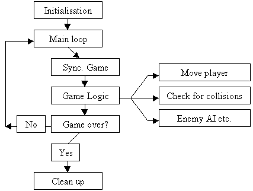
This chart is pretty much
self-explaining, so I won’t go into it into great detail. I just wanted you to
see a good example of a working game structure that is commonly used by game
developers. What you do is that, first you initialise all the global variables,
objects, timers etc. And you load all the objects and 3d models into memory. Then
we enter the main loop that takes care of all the game logic, and it keeps
looping until the game is over. Here you synchronise the game speed with the
time in order to prevent your game from running too fast or slow, and you
perform all the game logic in here such as enemy AI, collision detection,
player movements etc. Then, once the player has decided to leave your app, we
will clean up the system resources used throughout the game. Although this step
is for the most part taken care of by Jamagic itself, so fortunately you won’t
have to worry much about this. Just know that it’s absolutely necessary in
order to prevent memory-leaks.
Well,
that’s pretty much all there is to it. Of course I have left out a lot of
details here; we haven’t even got a menu or different levels to play. But you
should be able to implement those things by yourself without too much trouble,
so I’ll keep things simple.
Now, without further ado, I’ll drop you
the code for this.
// -----------------------
// Game programming model
// -----------------------
// define global variables
iSpeed = 1;
iSpeedUpVal = 0;
// Init Game
Game_Init();
While (!terminateProgram)
{
// Make sure the
game doesn’t run to slow
If
(iCurrentFrameRate > 0)
iSpeedUpVal =
1.0 / iCurrentFrameRate;
// Speed up the
game if the game runs to slow
iOldSpeed =
iSpeed;
iSpeed *=
iSpeedUpVal;
// Perform Game
Logic
Game_Main();
iSpeed =
iOldSpeed; // reset speed
oWin.Refresh(); //
refresh window
}
Game_Shutdown();
// -----------
// Functions
// -----------
Function Game_Init()
{
// Initialization
code goes here..
}
Function Game_Main()
{
// Game Logic goes
here..
}
Function Game_Shutdown()
{
// And cleaning up
goes here..
}
There’s nothing special about this
code, so I assume you can figure it out by yourself. Just notice how the
iCurrentFrameRate- variable is used to synchronise the speed. So that no matter
what the frame rate is, the game will run at the same speed. Of course you will
have to calculate the frame rate yourself before you could use this method, but
that is usually a snap. And for 3d games you can even use the built-in
GetSpeed() function of the camera object in order to retrieve the current
display speed.
Ok, now when we’ve
taken care of all the necessities. Let’s move on to something a bit more fun!
:-)
Chapter 2: Object-Oriented Programming (OOP)
Everybody’s taking about it, but very
few seem to actually know the proper meaning of the concept. Therefore, I’ll try
to explain what it’s all about, why to use it, and how to use it in Jamagic.
But for your understanding, I’m going to show you a couple of examples in C++
as well. In that way, I won’t leave anything important, and even if you can’t
use those parts directly in your games, you’ll get a better understanding of
OOP as a whole, and that’s why I’ll cover it. If you’re not familiar with the
language C++, don’t bother much about it. It’s the technique that is important,
not exactly how to implement things in a particular language. Now all you Java
people will probably be asking yourself: “Why not use Java, instead of C++ to
demonstrate the OOP concept?”. Well, the answer is simply this: I like C++
more, and I’m not all that familiar with Java. So I’ll stick to C++. If you’re
not comfortable with this, please feel free to use any other book available on
OOP and skip this part.
Now, let’s get started!
What is
Object-Orientated Programming?
Object-Oriented Programming is a
programming model, a way to design code. The idea of Object-Orientation is to
make the solution of a problem resemble the problem itself. Or more
specifically:
The
way an algorithm is designed should constitute a model of the problem area that
it is designed to support.
This is the way usual problem-solvers
think, even if they aren’t computer programmers. The thing is that just by
looking at the problem you would be able to understand how the solution works.
When problem-solvers look at a problem they usually split up reality into
different objects, and they find the solutions individually for each of them.
These objects could be anything: cars, chairs, computers, people or whatever.
And this is exactly how OOP works. Instead of having the name, age, date of
birth etc. of a person stored in many global variables, you store the variables
inside an object. You can also store functions of the object, so called
“Methods” in it. Here’s a picture that graphically shows a typical object with
some member variables and methods.
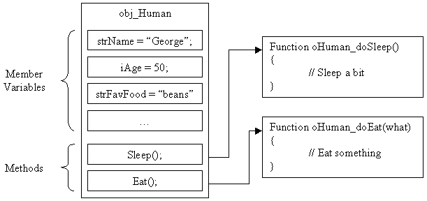
What you see here is basically an
object representing a human. It has different variables, such as: “name”,
“age”, “favourite food” and some others. It also has a few methods to help him
do things. You could add a lot more functions to this list, like “write a
computer program”, “go and play with toys”, or whatever you want, but I think
you get the point. To get the object up and running, you’ll have to create an
instance of the object. Actually, the picture you saw only displays a
user-defined datatype, not an object. An object is simply an instance of a
datatype, or, if that makes you more comfortable, a variable holding the
datatype. So to create an instance of the object above, you would do something
like this:
oGeorge = New obj_Human();
And to use its methods, just do:
oGeorge.Eat(“banana”);
Now let’s take a look
at how to implement the entire datatype and create an instance of it.
// --------------
// OOP-example 1
// --------------
Function obj_Human(strName, iAge,
strFavFood)
{
//
Member variables
This.strName
= strName; // name
This.iAge
= iAge; // age
This.strFavFood
= strFavFood; // favourite food
//
Methods
This.Sleep = oHuman_doSleep; // sleep
function
This.Eat
= oHuman_doEat; // eat function
}
Function oHuman_doSleep()
{
//
Sleep a bit
}
Function oHuman_doEat(what)
{
//
Eat something
}
|
|
Note:
Jamagic uses functions to represent datatypes. In C++ or Java, you would use
classes instead. Also, please note that all member variables and methods are
declared using the keyword “This” followed by a dot and then the identifier
of the variable itself. This tells us that the variables and functions are
members of the function they are defined in. |
Now that’s the basics. Let’s continue
by covering a few Object-Oriented techniques and terms. We’ll start with
abstraction.
Abstraction
Abstraction is the definition of an
abstract datatype, that is, a user-defined datatype. Jamagic comes with lots of
built-in datatypes (window controls, 3d-objects etc.), but abstraction means
creating your own ones. This is exactly what the preceding code-example did, so
in essence you already know this. Therefore I’m not going to cover it all
again, and jump straight onto encapsulation instead.
Encapsulation (non-Jamagic)
Encapsulation means preventing the user
from directly changing the member variables of a class. Instead of allowing the
user to directly access all the member variables of an object, you declare them
as private and write “getter” and “setter” functions to allow the user to
interact with the object. In that way you allow the user to interact with the interface of the class rather then the
actual implementation. Consider this piece of code, written in C++:
// ---------------
// A program
// ---------------
class Person
{
public:
//
Member variables
int
iAge, iYearOfBirth;
//
The Constructor
Person(int
age)
{iAge
= age; iYearOfBirth = currentYear - iAge;}
}
For all of you who aren’t familiar with
C++, I can tell you that what this does is that it creates a class and sets the
iAge member-variable to the value of the first parameters that was sent to the
constructor upon creation. Also, it sets the iYearOfBirth variable to the value
we get if we subtract the iAge variable from the current year (assuming that
this variable is valid). The program is pretty similar to last one we created,
and it works great. But should the user really be able to change the iAge-variable
whenever he feels like doing it? What if you change it after you have created
the object? That will cause iYearOfBirth to become invalid, and that might
cause troubles. Instead, consider this solution to the problem, where the iAge
and iYearOfBirth functions are hidden from the user, and where you’ll have to
use the interface of the object in order to retrieve the different values.
// -----------------
// A better version
// of the program
// -----------------
class Person
{
private:
int
iAge, iYearOfBirth;
public:
Person(int
age)
{iAge
= age; iYearOfBirth = currentYear – iAge;}
int
SetAge(int newAge);
int
GetAge();
int
GetYearOfBirth();
}
void Person::SetAge(int newAge)
{
iAge
= newAge; // set the new age
iYearOfBirth
= currentYear – iAge;
return
iAge;
}
Person::GetAge()
{
return
iAge;
}
Person::GetYearOfBirth()
{
return
iYearOfBirth;
}
This class uses encapsulation to hide
the variables themselves from the uses, so that they won’t be able to access
directly from the class. In other words, you won’t be able to do:
oGeorge = New Person(45);
// Now change the age of George
oGeorge.iAge++; // this will cause an
error
This is because of that variables
declared as “private” will not be accessible for anything except for functions
from the same class. Instead, you will have to use the interface of the object
in order to do anything, like this:
oGeorge = New Person(45);
// Now change the age of George
oGeorge.SetAge(oGeorge.GetAge() + 1);
And since the SetAge()- function of the
class automatically updates the iYearOfBirth variable too, you will always be
safe. So you’ve solved the problem! :-)
Encapsulation is incredibly useful when
writing code in a team, when other people will have to use your classes. It
enables them to work with the class without having to worry about its
implementation, and it prevents them from making mistakes that will cause
crashes or other kind of problems. Unfortunately, this technique is not
possible to use in Jamagic, since it doesn’t support declaration of private
variables. So the best thing you can do in order to prevent others from using
your objects incorrectly, is writing a big notice at the top of your code,
saying: “Please make sure to understand the entire implementation before you
start using this object”, and that isn’t all too hot, really…
At least, you have now learnt about
what encapsulation is and why people are using it. Let us move on to another
OOP technique: inheritance.
Inheritance (non-Jamagic)
Sadly, neither this technology is
directly supported by Jamagic. So I’ll stick to C++ for these examples as well.
Inheritance is simply the ability for
one class to inherit properties from another class. The original class is
called the baseclass and the new one
is called the derived class. Or some
people refer to them as the superclass and
the subclass. When this is used, the
derived class will inherit the data representation and the behaviour of the
baseclass. You can create instanced of the derived class as well as of the
baseclass.
Here’s the relation between the
baseclass and the delivered class(es):
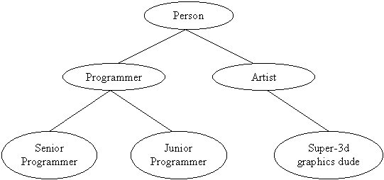
Now, we can see that the Person class
has two subclasses: the Programmer- and the Artist class. They also do have
subclasses. This makes sense, because it doesn’t matter if a person is a
programmer or not, he will still be a person. And hence, he should have all the
properties of the human brain. Then, if he is a programmer, he should have some
basic knowledge in programming, and if he’s not, he should have some knowledge
in whatever he’s good at. And then it goes on like this for ever :-)
This is how inheritance works in
theory. Now let’s take a look at an example of this in computer code (C++).
// --------------------------
// An example of inheritance
// --------------------------
// the very baseclass
class Person
{
public:
int
iAge, iYearOfBirth;
Person(int
age)
{iAge
= age; iYearOfBirth = currentYear – iAge;}
}
class Programmer : public Person
{
public:
int
numbersOfKnowsLangs;
Programmer(nLangs)
{
numbersOfKnownLangs = nLangs; }
}
class SeniorProgrammer : public
Programmer
{
public:
// blah
SeniorProgrammer()
{
/* blah */ }
}
And so on. Notice how the “:” operator
is used to tell the compiler that one class inherits the interface from
another. The “public” keyword is used to indicate that we’ll want the class to
inherit the public interface only, not the private members since that can cause
confusion. Now, I didn’t cover all of the classes in this example, but I think
you can figure out how to implement the others yourself. Also, I should say
that there are loads of other things to think about when using inheritance in
your coding. You’ll have to use virtual functions for functions that will be
further specified in the derived classes, and you can allow non-related classes
to access your information through the use of friends. But since you cannot use this in Jamagic anyway, I’ll
leave it out.
Polymorphism (non-Jamagic)
Well, since neither this technique is
directly supported in Jamagic (I’m starting feel a little repetitive right
now), I can’t show you any real examples of this in JamagicScript. And since I
believe you are pretty tired of all these C++ examples by now, I’ll just
explain this one in theory. If you want to find out more about this and the
other OOP techniques, I would strongly recommend reading a book on this
subject. But for now, I’ll leave out the technical aspects of polymorphism, and
only cover it in theory.
Polymorphism is the possibility for methods
to behave differently depending on from where they were called. Simply, this
means that different classes can have methods with the same name, but with
different behaviour, and the computer can decide which one to call based on
from where it was called. So as an example, imagine that we are continuing to
develop the inheritance system from the last example. Here the Programmer class
is split up into two subclasses. Now, the Programmer baseclass will probably
have a function called doProgramming(); or something similar. Also, we want the
Senior programmer to write different code than the Junior Programmer, so we’ll
have to specify two different doProgramming()- functions: one for each derived
class. Then, the computer calls the doProgramming()- function that is specified
for the class that has called the function. So, if we call the doProgramming()-
function from the Senior Programmer it will call the “senior version” of the
doProgramming()- function, and when we call the function from the Junior Programmer
it will call the “junior version” of the function. And this is exactly what
polymorphism is all about.
Summary:
That’s my quick explanation of OOP. Of
course, there are lots of other details to cover that I have left out totally,
but I think that this introduction has been more than enough to set you
thinking. I believe that you at least have a vague understanding of the OO
concept by now: You know what OOP is, how to use some of its techniques and also
you should be familiar with a few OOP terms, such as “methods”, “abstraction”,
“objects” and “polymorphism”.
Now, the most important thing to
remember about OOP is that it isn’t some kind of magical power that will make
your games perfect. Bad code will always be bad code, no matter if you use OOP
or not. You should use OOP in a reasonable manner. If you have no reason to use
OOP, then don’t! The people who play your game won’t care about how you created
it. As far as it is good, people will play it. So keep that in mind when
designing your games and everything should be fine. Now, let’s move on to the
next chapter!
Chapter 3:
Going 3D
Ok, I know a lot of you out there are
curious to find out more about the 3D aspect of Jamagic. So here’s a chapter
with some useful 3D stuff to get you up and running. We’ll start off with the
basics of 3D and then we’ll move on to special effects, heightmapping and a few
other concepts. We’ll cover textures, normals, and a whole lot more! So keep
reading.
The basics
Before we dive into all the different
concepts and terms of 3d, I’d like to make sure that you know a few basic
things. I’ll start by explaining the new angle system that has replaced the old
one used in previous versions of Jamagic (the ones before Built #12). Since it
works slightly different now, some of you may not be 100% sure about how it
works. In case you already know this, feel free to skip ahead to the next
section.
The angles in Jamagic are all in
radians, not in degrees. That means
that angles in Jamagic are not values
between 0 and 360, they are floats from 0 to 2*Pi (hence you can see that Pi
radians = 180 degrees). To convert an angle in degrees into radians, simply use
this formula:
AngleInRadians = Pi/180 *
AngleInDegrees
That’s about as easy as something can
get. Since 2*Pi was equal to 360 degrees, Pi is equal to 180 degrees, and hence
Pi/180 is the same as 1 degree.
In the new angle system, all angles are
absolute (meaning that they are
relative to the world axis, rather than to their own axis). As an example,
imagine this brick:
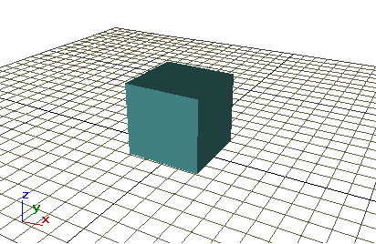
Now, since the angles are absolute, it
doesn’t matter what direction the object is facing, rotating it around the x
angle will always rotate the object
around the world’s x axis. Hence, rotating this brick in the x angle would
result in something like this:
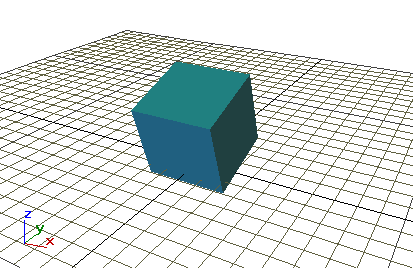
And this is how it works in all angles,
so here’s how the object would look if it had been rotated in the y and z
angles instead:
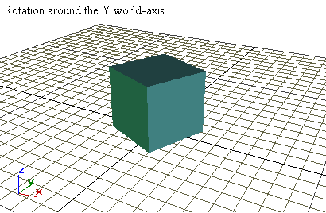
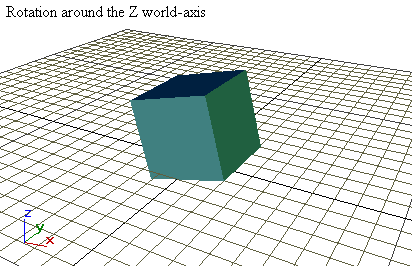
If this seems odd to you, make sure to
play around with the built-in world editor in Jamagic until this makes
perfectly sense to you. You won’t go far if you can’t understand how to rotate
objects, so don’t read on before you understand this to 100%! With that in
mind, let’s see some code for how to rotate objects:
// -----------------
// Rotation example
// -----------------
// Globals
oWin = 0; // the window
oWorld = 0; // the world
oCamera = 0; // the camera
oBrick = 0; // the brick
tVar = 0;
// do Initialization
Game_Init();
While (TRUE)
{
//
Sync time to ~60 FPS at a maximum
If
(System.GetElapsedTime() - tVar > 16)
{
tVar
= System.GetElapsedTime();
Game_Main();
}
}
// -------------------
// FUNCTIONS
// -------------------
Function Game_Init()
{
//
Set up Window
oWin
= New Window(640, 480, "Rotation");
oWin.SetAutoRefresh(OFF);
//
Set up World, Camera and brick
oWorld
=
oCamera
= New Camera(oWorld, oWin);
oCamera.SetPosition(0,0,-200);
oBrick
= oWorld.CreateBrick(30,30,30);
}
Function Game_Main()
{
//
Check for input
If
(IsKeyDown(Keyboard.LEFT))
{
//
rotate object around the y axis
oBrick.SetAngle(oBrick.GetXAngle(),
oBrick.GetYAngle() + (Pi/180), oBrick.GetZAngle());
}
If
(IsKeyDown(Keyboard.RIGHT))
{
//
rotate object around the y axis
oBrick.SetAngle(oBrick.GetXAngle(),
oBrick.GetYAngle() - (Pi/180), oBrick.GetZAngle());
}
If
(IsKeyDown(Keyboard.UP))
{
//
rotate object around the x axis
oBrick.SetAngle(oBrick.GetXAngle()
+ (Pi/180), oBrick.GetYAngle(), oBrick.GetZAngle());
}
If
(IsKeyDown(Keyboard.DOWN))
{
//
rotate object around the x axis
oBrick.SetAngle(oBrick.GetXAngle()
- (Pi/180), oBrick.GetYAngle(), oBrick.GetZAngle());
}
If
(IsKeyDown(Keyboard.ADD))
{
//
rotate object around the z axis
oBrick.SetAngle(oBrick.GetXAngle(),
oBrick.GetYAngle(), oBrick.GetZAngle() + (Pi/180));
}
If
(IsKeyDown(Keyboard.SUBTRACT))
{
//
rotate object around the z axis
oBrick.SetAngle(oBrick.GetXAngle(),
oBrick.GetYAngle(), oBrick.GetZAngle() - (Pi/180));
}
If
(IsKeyDown(Keyboard.ESCAPE))
{
Game_Shutdown();
}
Else
{
oWin.Refresh();
}
}
Function Game_Shutdown()
{
Delete
oBrick;
Delete
oCamera;
Delete
oWorld;
Delete
oWin;
End();
}
You can see here that I haven’t added
the “speed-up-the-game-if-it-runs-too-slow” functionality that I used in
Chapter 1, because right now I just like to keep things simple, but remember
that this should always be used in “real” games so that the game’s speed won’t
depend on the hardware.
Also, you should notice that I rotate
the object by Pi/180 radians. You could add the functionality for the player to
control the rotation speed, by multiplying the result of Pi/180 with a variable
that the player can set during runtime.
Now you understand how absolute angles
work. Relative angles works similar, but they are relative to the object’s own
axis rather than the world’s axis. So for example, if you rotate an object
whose x, y and z angles are set to 0 around its own X-axis by 90 degrees (or
Pi/2 radians) and then you rotate it around its own Z axis, you would get the
same results as if you rotated the object around the world’s Y axis. Since the
SetAngle()- function always uses angles relative to the world’s axis, you must
use the new SetRelativeAngle()- function in order to rotate an object around
its own axis. Here’s a modified version of the previous rotation example with
added functionality so that you now can chose whether you want to rotate an
object around its own axis, or around the world axis, by pressing “S”:
// --------------------------
// Rotation example with
// Object-Relative rotations
// --------------------------
// Globals
oWin = 0; // the window
oWorld = 0; // the world
oCamera = 0; // the camera
oBrick = 0; // the brick
oModeText = 0;
intMode = 0; //
current rotation mode
tVar = 0;
// do Initialization
Game_Init();
While (TRUE)
{
//
Sync time to ~60 FPS at a maximum
If
(System.GetElapsedTime() - tVar > 16)
{
tVar
= System.GetElapsedTime();
Game_Main();
}
}
// -------------------
// FUNCTIONS
// -------------------
Function Game_Init()
{
//
Set up Window
oWin
= New Window(640, 480, "Rotation");
oWin.SetAutoRefresh(OFF);
//
Set up World, Camera and brick
oWorld
=
oCamera
= New Camera(oWorld, oWin);
oCamera.SetPosition(0,0,-200);
oBrick
= oWorld.CreateBrick(30,30,30);
//
Text objects
oMiscText
= New StaticText(oWin, "Press 'S' to toggle Absolute/Object Relative
rotation ON/OFF", 7, 5, 300, 15);
oMiscText.SetColor(GetRGB(255,255,255));
oMiscText.SetBackColor(GetRGB(0,0,0));
oModeText
= New StaticText(oWin, "Current Rotation mode: Absolute", 7, 20, 200,
20);
oModeText.SetColor(GetRGB(255,255,255));
oModeText.SetBackColor(GetRGB(0,0,0));
}
Function Game_Main()
{
If
(IsKeyDown("S"))
{
intMode
= !intMode;
//
Update display
If
(intMode)
oModeText.SetText("Current
Rotation mode: Object Relative");
Else
oModeText.SetText("Current
Rotation mode: Absolute");
While(IsKeyDown("S"));
}
Switch(intMode)
{
Case
0:
//
Check for input
If
(IsKeyDown(Keyboard.LEFT))
{
//
rotate object around the y axis
oBrick.SetAngle(oBrick.GetXAngle(),
oBrick.GetYAngle() + (Pi/180), oBrick.GetZAngle());
}
If
(IsKeyDown(Keyboard.RIGHT))
{
//
rotate object around the y axis
oBrick.SetAngle(oBrick.GetXAngle(),
oBrick.GetYAngle() - (Pi/180), oBrick.GetZAngle());
}
If
(IsKeyDown(Keyboard.UP))
{
//
rotate object around the x axis
oBrick.SetAngle(oBrick.GetXAngle()
+ (Pi/180), oBrick.GetYAngle(), oBrick.GetZAngle());
}
If
(IsKeyDown(Keyboard.DOWN))
{
//
rotate object around the x axis
oBrick.SetAngle(oBrick.GetXAngle()
- (Pi/180), oBrick.GetYAngle(), oBrick.GetZAngle());
}
If
(IsKeyDown(Keyboard.ADD))
{
//
rotate object around the z axis
oBrick.SetAngle(oBrick.GetXAngle(),
oBrick.GetYAngle(), oBrick.GetZAngle() + (Pi/180));
}
If
(IsKeyDown(Keyboard.SUBTRACT))
{
//
rotate object around the z axis
oBrick.SetAngle(oBrick.GetXAngle(),
oBrick.GetYAngle(), oBrick.GetZAngle() - (Pi/180));
}
Break;
Case
1:
//
Check for input
If
(IsKeyDown(Keyboard.LEFT))
{
//
rotate object around the y axis
oBrick.SetRelativeAngle(0,
Pi/180, 0);
}
If
(IsKeyDown(Keyboard.RIGHT))
{
//
rotate object around the y axis
oBrick.SetRelativeAngle(0,
-(Pi/180), 0);
}
If
(IsKeyDown(Keyboard.UP))
{
//
rotate object around the x axis
oBrick.SetRelativeAngle(Pi/180,
0, 0);
}
If
(IsKeyDown(Keyboard.DOWN))
{
//
rotate object around the x axis
oBrick.SetRelativeAngle(-(Pi/180),
0, 0);
}
If
(IsKeyDown(Keyboard.ADD))
{
//
rotate object around the z axis
oBrick.SetRelativeAngle(0,
0, Pi/180);
}
If
(IsKeyDown(Keyboard.SUBTRACT))
{
//
rotate object around the z axis
oBrick.SetRelativeAngle(0,
0, -(Pi/180));
}
Break;
}
If
(IsKeyDown(Keyboard.ESCAPE))
Game_Shutdown();
Else
oWin.Refresh();
}
Function Game_Shutdown()
{
Delete
oBrick;
Delete
oCamera;
Delete
oWorld;
Delete
oWin;
End();
}
Play around with this example for a
while until you have a complete understanding of how the angle system works.
This is the base for everything that we’ll work on later, so you better
understand all of it. Also, I will assume that you are familiar with- and know
how to work with objects, worlds, cameras and so on. Learning how to use them
shouldn’t be hard at all, so therefore I won’t explain them here (this
tutorials is big enough as it is). Now let’s look at some fundamental concepts
for 3d game programming, and we’ll start off by explaining normals.
The
Since I will use the term “normals” a
lot throughout this article, I think that an explanation of that concept is
necessary. Also, if you are not familiar with vectors or would like a
refresher, please read through “Appendix 1: 3d Math”.
The normal of a polygon is a vector
pointing in the direction the polygon is facing. Common uses for the normal
include:
•
Lighting (by comparing the direction of the light with the normal of the
polygon we can decide how well the polygon should be lit)
•
Backface Culling (the process of ignoring polygons that are not facing the
camera)
•
Collision detection
Although Jamagic handles all of these
things automatically, you will have to know about the normal in order to
understand certain concepts, and you will get a better understanding of why
things work.
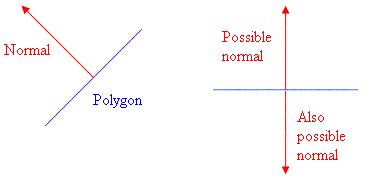
As you can see in the picture above,
the normal is a vector that is perpendicular to the polygon. And you can also
see that we can choose between two normals that are facing the opposite
direction. As I will explain to you later on, Jamagic uses the order you define
the points of the polygon to tell which normal to use.
In order to calculate the normal, we
can use something called “the cross-product” (again, see Appendix 1 for further
information).
Lighting
Using lighting in Jamagic is a snap, so
I won’t explain it in great detail here. All you need to do is create a light,
set it up, and you’re done! You can set the radius of the light so that it will
only light a small part of your world, and you can change its colour and
intensity by using the SetColor() and SetIntensity() functions. Now if that’s
not simple, then tell me what is :-)
Textures
Every game nowadays uses textures, so
there’s no reason for not using them in your game as well. For those of you who
don’t know, textures are 2d bitmaps that are mapped upon the polygons of an
object to create an illusion of surface detail. Every point in the object that
has a texture has U and V coordinates to indicate what part of the texture that
the polygon is supposed to display.
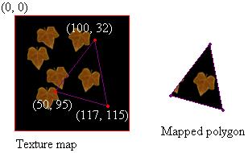
As you can see, the three points of the
polygon has the UV coordinates (100, 32), (50, 95) and (117, 115) and therefore
it only displays a small part of the texture.
Creating and applying textures to an
object is pretty straight forward, you simply create a new material using a texture,
and then you apply it to a 3d mesh, so I don’t think there is any need for a
code example here. Instead, let’s take a look at a way to generate some cool
terrain!
Heightmapping
Heightmapping is the process of
creating a 3d landscape from a 2d bitmap. In essence, you simply create a grid
of polygons and use the pixel colours to represent height. Here’s an example of
a typical heightmap that we could use to generate our terrain:
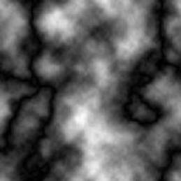
Here, we are using a grey-scale bitmap
with white representing the high areas of our terrain and black representing
the low areas. Although you can use whatever colours you like, this is how it’s
most commonly done. As you might have guessed, we must create a scale variable
for the height so that we know what “maximum height” means, and I usually
create a ScaleXZ variable as well so that I can control the width and depth of
the terrain.
What might be a little tricky here is
splitting the grid of pixels into triangles. In order to visualize this, please
have a look at this picture:
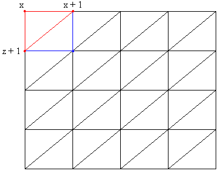
As you can see, the first polygon we
would like to create should consist of tree points: P1(x, z), P2(x + 1, z) and
P3(x, z + 1). Then the second polygon should be: P1(x + 1, z), P2(x + 1, z + 1)
and P3(x, z + 1). Also, please note that it is the order you define the points
that tell Jamagic in what direction your polygon is facing, if you for example
define the points counter-clockwise and don’t see a thing, try to define them clockwise
instead so that the polygon will face the opposite direction.
However, now that we know how to create
the first two polygons we simply use the RGB-value of the pixel scaled by an
integer to assign the four points a height, and then we repeat this process for
each pixel in the heightmap. Here’s the code:
//
--------------------------------
//
An example of Heightmapping
//
--------------------------------
//
Variables
oWin
= 0;
oWorld
= 0;
oCamera
= 0;
oHeightfield
= 0;
//
Init the game
Game_Init();
While(1)
{
Game_Main();
}
Function
Game_Init()
{
// Create the window and the world
oWin = New Window(640, 480,
"Heightmap example");
oWin.SetAutoRefresh(OFF);
oWorld =
// Load the heightmap
oHeightfield = New obj_Terrain(oWorld,
"Heightmap", 50, 2);
oHeightfield.LoadTerrain();
// Create and set up the camera
oCamera = New Camera(oWorld, oWin);
oCamera.SetPosition(-500, 0, 0);
oCamera.TurnTo(0, 0, 0);
oCamera.Walk();
}
Function
Game_Main()
{
// refresh the view
oWin.Refresh();
If (Keyboard.IsKeyDown(Keyboard.LBUTTON))
oWorld.SetWireframe(ON);
If (Keyboard.IsKeyDown(Keyboard.RBUTTON))
oWorld.SetFlat(ON);
}
//
-------------
//
Heightfield
//
-------------
Function
obj_Terrain(oWorld, strHeightmap, iScaleXZ, iScaleY)
{
// Variables
This.iScaleXZ = iScaleXZ;
This.iScaleY = iScaleY;
// Objects
This.oHeightmap = New
Surface(strHeightmap);
This.oTerrain = New Object(oWorld,
"Terrain"); // the terrain object
// Methods
This.LoadTerrain = obj_Terrain_doLoad;
}
//
Methods
Function
obj_Terrain_doLoad()
{
Display.BeginPolygonChange();
oPointArray[0] = New PointArray(3);
oPointArray[1] = New PointArray(3);
// Create the polygons
For (z = 0; z <
This.oHeightmap.GetPixelHeight() - 1; z++)
{
For (x = 0; x <
This.oHeightmap.GetPixelWidth() - 1; x++)
{
oPointArray[0].DeletePoint();
oPointArray[1].DeletePoint();
// Create the points
iY =
Program.GetRed(This.oHeightmap.GetPixel(x, z));
oPoint = oPointArray[0].AddPoint(x
* This.iScaleXZ, iY, z * This.iScaleXZ);
iY =
Program.GetRed(This.oHeightmap.GetPixel(x + 1, z));
oPoint =
oPointArray[0].AddPoint((x+1) * This.iScaleXZ, iY, z * This.iScaleXZ);
iY =
Program.GetRed(This.oHeightmap.GetPixel(x, z + 1));
oPoint =
oPointArray[0].AddPoint(x * This.iScaleXZ, iY, (z+1) * This.iScaleXZ);
iY =
Program.GetRed(This.oHeightmap.GetPixel(x + 1, z));
oPoint =
oPointArray[1].AddPoint((x+1) * This.iScaleXZ, iY, z * This.iScaleXZ);
iY = Program.GetRed(This.oHeightmap.GetPixel(x
+ 1, z + 1));
oPoint =
oPointArray[1].AddPoint((x+1) * This.iScaleXZ, iY, (z+1) * This.iScaleXZ);
iY =
Program.GetRed(This.oHeightmap.GetPixel(x, z + 1));
oPoint =
oPointArray[1].AddPoint(x * This.iScaleXZ, iY, (z+1) * This.iScaleXZ);
// Create two polygons
This.oTerrain.AddPolygon(oPointArray[0]);
This.oTerrain.AddPolygon(oPointArray[1]);
}
oWin.EraseRect();
oWin.DrawText("Loading...
" + Program.GetString(z) + " rows done", 0, 0);
oWin.Refresh();
}
Display.EndPolygonChange();
This.oMat = New Material(oWorld, GREEN);
This.oMat.SetMapped(ON);
This.oMat.SetNormal();
This.oTerrain.ApplyMaterial(This.oMat);
oWorld.SetGouraud(ON);
}
This code is completely unoptimized, so
I wouldn’t recommend using it in a game or anything. As a matter of fact, I
would rather generate the terrain once and then export it to an external .gib
file that the game loads, since that would speed up the loading times
tremendously (that is due to that Jamagic wouldn’t have to calculate the
normals each time the level is loaded). Also, I would like you to pay attention
to the Display.BeginPolygonChange() and Display.EndPolygonChange() functions
since I tend to forget putting these into my code myself. They are extremely
important since they tell Jamagic that a huge amount of polygons will be
created, and therefore Jamagic will not calculate the polygon normals until the
EndPolygonChange() function is called. If we had omitted these calls, Jamagic
would have recalculated the normals of the entire terrain each time a new
polygon was added, and that would have caused a major, major slowdown.
The advantages of using heightmaps are
that you don’t need a 3d modeller in order to create good-looking terrain and
they are very simple to texture.
Particle systems
Particle systems are a great way to
create stunning effects in 3d games. Basically, a particle system creates and
manages a set of particles that can be used to add realism to explosions,
create cool vapour effects and a lot more. Although there are millions of ways
to implement a particle system in your game, I will explain the way I generally
do the whole thing.
Since managing a huge array of blobs
probably will turn out to be rather inefficient, you will have to create a
system of some sort to manage all your particles, and I recommend using an
object-oriented approach here. For my system, I created a master system that
stores all the particles as children in an array, and then I use a state
variable in the particles to indicate whether the particle is currently in use.
In order to launch an explosion, we then simply call a method of the master
system, and when the particles have reached the end of their path, I simply
change their status so that they are free to use again. In that way we reuse
the same particles over and over again, instead of creating new ones all the
time, and thus preventing halting of the system.
Now let’s see some code for a standard
particle system:
// -------------------------
// A Simple Particle Engine
//
-------------------------
Function
obj_Particle_Engine(oWorld, iNParticles)
{
// Member Variables
This.iNParticles =
iNParticles;
This.iNFreeParticles
= iNParticles;
// Objects
This.oWorld = oWorld;
This.oParticle = 0; // array of particles
// Init particles
Program.DisableEvents();
Display.BeginPolygonChange();
For (x = 0; x < This.iNParticles; x++)
{
This.oParticle[x] = New
obj_Particle(This.oWorld, "Star");
}
Display.EndPolygonChange();
Program.EnableEvents();
// Methods
This.CreateExplosion =
fnc_Particle_Engine_doCreateExplosion;
This.Process =
fnc_Particle_Engine_doProcess;
}
Function
obj_Particle(oWorld, oMaterial)
{
// Member Variables
This.iState = 0; // 0 = the particle is
not in use, 1 = the particle is in use
This.iX = 0;
This.iY = 0;
This.iZ = 0;
This.iXAngle = 0;
This.iYAngle = 0;
This.iGravity = 0;
This.iInitialGravity = 0;
This.iPower = 0;
This.iTerminalVelocity = 0;
This.iStartTime = 0;
// Objects
oPos = New Position(oWorld, 0, 0, 0);
This.oBlob = New Blob(oWorld, oPos,
oMaterial, "Particle", 3, 3);
This.oBlob.SetAxisMovingX(TRUE);
This.oBlob.SetAxisMovingY(TRUE);
This.oBlob.SetAxisMovingZ(TRUE);
This.oBlob.Hide();
// Methods
This.Process = fnc_Particle_doProcess;
}
//
-----------
//
Methods
//
-----------
//
obj_Particle_Engine
Function
fnc_Particle_Engine_doProcess()
{
For (x = 0; x < This.iNParticles; x++)
{
If (!This.oParticle[x].Process())
This.iNFreeParticles++;
}
}
Function
fnc_Particle_Engine_doCreateExplosion(iX, iY, iZ, oMaterial, iNParticles,
iGravity, iPower, iWidth, iHeight, iTerminalVelocity)
{
// This method creates an explosion
effect.
This.iNParticlesToSetUp = iNParticles;
// Make sure we have enough particles
If (This.iNFreeParticles < iNParticles)
This.iNParticlesToSetUp =
This.iNFreeParticles;
// Set up the particles
For (x = 0; x <
This.iNParticlesToSetUp; x++)
{
// Make sure the particle is free
If (!This.oParticle[x].iState)
{
This.oParticle[x].iX = iX;
This.oParticle[x].iY = iY;
This.oParticle[x].iZ = iZ;
This.oParticle[x].iXAngle =
(Pi / 180) * Math.Random(90);
This.oParticle[x].iYAngle =
(Pi / 180) * Math.Random(360);
This.oParticle[x].iGravity =
0;
This.oParticle[x].iInitialGravity
= iGravity;
This.oParticle[x].iPower =
iPower + Math.Random(15);
This.oParticle[x].iTerminalVelocity
= iTerminalVelocity;
This.oParticle[x].iStartTime =
System.GetElapsedTime();
This.oParticle[x].oBlob.Show();
// Change the state to active
This.oParticle[x].iState = 1;
This.iNFreeParticles--;
}
Else // It's not, we'll have to loop
through more particles
{
This.iNParticlesToSetUp++;
}
}
}
//
obj_Particle
Function
fnc_Particle_doProcess()
{
If (This.iState)
{
// Calculate new position
This.iX += (Sin(This.iYangle) *
Cos(This.iXAngle)) * (This.iPower * iSpeedUpVal);
This.iY += (Sin(This.iXAngle) *
(This.iPower * iSpeedUpVal)) - (This.iGravity * iSpeedUpVal);
This.iZ += (Cos(This.iYangle) *
Cos(This.iXAngle)) * (This.iPower * iSpeedUpVal);
If (This.iPower)
This.iPower -= (15 *
iSpeedUpVal);
This.iGravity =
Math.Min(This.iTerminalVelocity, This.iGravity + ((This.iInitialGravity * 2) *
iSpeedUpVal));
// Update the blob
This.oBlob.SetPosition(This.iX,
This.iY, This.iZ);
If (System.GetElapsedTime() -
This.iStartTime > 1500)
{
// The particle is no longer
in use
This.iState = 0;
This.oBlob.Hide();
Return FALSE;
}
}
Return TRUE;
}
And
here’s how you could use this system in your game:
//
---------------------------------
//
A small demo of particle effects
//
---------------------------------
//
Constants
GAME_WIDTH
= 640;
GAME_HEIGHT
= 480;
GAME_BPP
= 16;
GAME_FULLSCREEN
= TRUE;
//
Global objects
oWin
= 0;
oSurface
= 0;
oSprite
= 0;
oWorld
= 0;
oCamera
= 0;
oParticleSys
= 0;
//
Global Variables
iSpeedUpVal
= 0;
//
Game Variables
iNParticles
= 1;
iPower
= 50;
iGravity
= 2;
//
Init game
Game_Init();
While(1)
{
If (oCamera.GetSpeed() > 0)
iSpeedUpVal = 1.0 /
oCamera.GetSpeed();
// Perform game logic
Game_Main();
// Display info
oSurface.EraseRect();
oSurface.DrawText("Power: " +
Program.GetString(iPower), 0, 0);
oSurface.DrawText("Gravity: " +
Program.GetString(iGravity), 0, 20);
oSurface.DrawText("Framerate: "
+ oCamera.GetSpeed() + " FPS", 0, 40);
oSprite.Set(,, oSurface);
// Refresh the window
oWin.Refresh();
}
Function
Game_Init()
{
// Create and set up the window
oWin = New Window(GAME_WIDTH, GAME_HEIGHT,
"Particle Engine");
oWin.SetAutoRefresh(OFF);
// Are we running in fullscreen?
If (GAME_FULLSCREEN)
{
oWin.SetFullScreenMode(GAME_WIDTH,
GAME_HEIGHT, GAME_BPP);
}
// Create a surface to draw text
oSurface = New Surface(150, 100);
oSurface.SetBackgroundColor(BLACK);
oSurface.SetPenColor(WHITE);
oSurface.EraseRect();
oSprite = New Sprite(oWin, 0, 0,
oSurface);
// Create the world
oWorld =
oCamera = New Camera(oWorld, oWin);
oCamera.SetPosition(0, 0, -500);
oCamera.TurnTo(0, 0, 0);
// Create the particle engine
oParticleSys = New
obj_Particle_Engine(oWorld, 500);
}
Function
Game_Main()
{
// Handle input
If (Keyboard.IsKeyDown(Keyboard.ESCAPE))
{
// Quit
Program.End();
}
If (Keyboard.IsKeyDown(Keyboard.LBUTTON)
|| Keyboard.IsKeyDown(Keyboard.RETURN))
{
// Create a new particle system
oParticleSys.CreateExplosion(0, 0,
0, "Star", iNParticles, iGravity, iPower, 10, 10, 100);
}
If (Keyboard.IsKeyDown(Keyboard.UP))
{
iPower++;
}
If (Keyboard.IsKeyDown(Keyboard.DOWN))
{
iPower--;
}
If (Keyboard.IsKeyDown(Keyboard.LEFT))
{
iGravity++;
}
If (Keyboard.IsKeyDown(Keyboard.RIGHT))
{
iGravity--;
}
// Process particle systems
oParticleSys.Process();
}
As you
can see, we now have a clear and simple interface to our system. The
obj_Particle_Engine is our master system, and the obj_Particle-object
represents the particles. In order to maintain these, we simply call the
Process() method of the master system inside the Game_Main function, and we can
create a simple explosion-effect by calling CreateExplosion().
One major
restriction here though, is that we must know how many particles that the user
shall be able to see at a time. If we for example create our system with only
100 particles and then we request an explosion involving 500 particles to be
launched, the extra 400 particles will be ignored. In order to fix this, we
would have to change the second parameter that is sent to obj_Particle_Engine
upon creation so that more particles are created.
Also, you
would have to customize the particle behaviour in your game so that it matches
its purpose. But that is pretty obvious, isn’t it :-)
Summary
Well,
that’s it. By now I think you should have a pretty solid understanding of how
to create 3d games and applications in Jamagic. You know how the angle system
works, you know what a normal is and how why it is important, you’ve learned
about UV coordinates and texture mapping, you’ve generated some really cool
terrain for out-door environments and you’ve created a pretty cool particle
system for your special effects. However, I have not covered creation of 3d
objects, cameras, materials and so on. This is intentional and due to that I
rather wanted to focus on different 3d techniques and concepts that are not
covered in Clickhelp. You should have no problems implementing these objects
anyway, and if you do encounter a problem you can either ask me or any of the
Jamagic gurus at the Clickteam forums.
Now, I
know that a lot of you out there want to learn about vectors, matrices and
other math concepts that come in handy when working in 3d. So therefore I have
written a small appendix about 3d math for those of you who are interested. But
please note that it is by no means necessary to know all of this stuff. Jamagic
does a good job at encapsulating the math calculations that are performed so
that you don’t have to bother with them.
Still,
understanding what is going on under the hood is always a plus.
Appendix 1: 3d math
Scalar values and vectors
In ordinary math, we
generally use so called scalar values
– numbers that describe a value. We can use scalar values when we specify the
temperature outside, the value of a counter or anything similar.
Vectors on the other hand,
do not only have a value. They also have a direction, and hence we must use a
coordinate system in order to describe them. That is due to that we must show
in what direction the vector is pointing in order to describe it. This is
usually done by drawing an arrow that has the length equal to the value (or
magnitude) of the vector, and have it point in the same direction as the
vector.
Please note that I’ll stick
to two-dimensional vectors for now, in order to simplify the math.
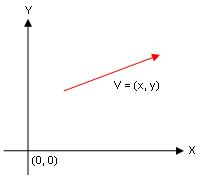
The red arrow in the
coordinate system above shows a typical vector. We can also see that a vector
is usually denoted as V = (x, y),
where V is the name of the vector
(we usually use a bold letter for this in order to indicate that it is a
vector) and where x and y are the components
of the vector. That is, the length of the vector along the x and y axis.
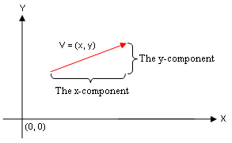
When we compare vectors, we
use their components. Since two vectors are identical if they have the same
length and direction, we know that they are identical if they have the same
components. It doesn’t matter where it is placed. You could also say that if
you’ve got two vectors, V and Q, that have the same length but are
pointing in the opposite directions, V
would have the value of -Q and Q would have the value of -V.
Multiplying a vector by a scalar value
By multiplying a vector and
a scalar value we can change its length, while its direction remains the same.
You can in other words double the size of the vector by multiplying it with 2,
and likewise you can shorten it by multiplying it with a value less than 1.0.
And by multiplying the vector with a negative value you will reverse its
direction.
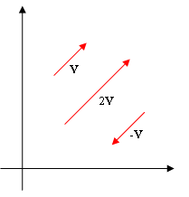
But how can we do this?
Since we know that the x and y components of the vector represents the length
of the vector in x and y, we can simply multiply these with our number in order
to achieve the desired result. In other words, if V = (x, y), then 2V =
(2x, 2y), 0.5V = (0.5x, 0.5y) and -V = (-x, -y).
Vector addition
You get the sum of two
vectors by moving them together so that the second vector starts where the
first one ends, and then you simply draw a vector from the beginning of the
first vector to the end of the second one.
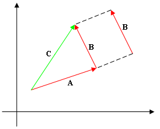
So the sum of two vectors
results in a third one, A + B = C.
But how can we do this in an algebraic manner? Please have a look this picture:
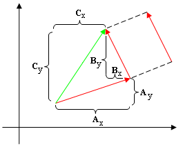
Here we can see that the
x-component of C is equal to the sum
of vector A and B’s x-components. Hence, Cx = (Ax + Bx), and Cy = (Ay + By). So we
can say that C = (Ax + Bx, Ay + By),
and A + B = C.
Vector subtraction
Since we know what A + B is, we can simply compute A - B by adding A and (-B) together. We also know that -B = (-Bx, -By), so therefore we can say
that A - B = (Ax + (-Bx), Ay +
(-By)) which is the same as (Ax – Bx, Ay – By).
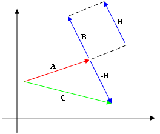
We move B so that it starts where A
is ending, and then we invert it. After that we simply add them together (A + (-B)) and we have C.
The length of a vector
By looking at a vector we
can see that the x- and y-components are similar to the sides of a triangle,
and the vector itself would in that case resemble the hypotenuse.
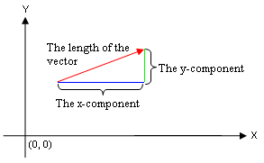
Everything we need to do in
order to compute the length of a vector is therefore to use Pythagoras’
Theorem, and we can then see that the length of a vector is equal to |V| = 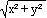
Unit vectors
A unit vector is a vector
with the length equal to one. We can compute the unit vector of another vector
by multiplying it with a scalar value so that its length becomes equal to one.
Since we know how to compute a vector’s length, we can see that if we multiply
a vector by 1/|V| we will get a unit
vector. To indicate that it is a unit vector, we use the lowercase name of the
original vector as its name. We can now see that:
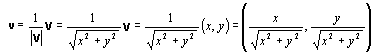
And we can also say that v = V/|V| since that is the same as V(1/|V|).
The vector between two points
When computing the vector
from one point to another, we use vectors that begin at (0, 0). If we draw two
vectors from the origin to the points, we will see that these vectors will have
the same components as the coordinates of their respective points. So if one of
the points is located at (10, 50), its corresponding vector will have the
components (10, 50) as well. If we then calculate the difference between these
two vectors, we will get a vector that is equal to the vector between the two
points. We can tell this by looking at the figure below.
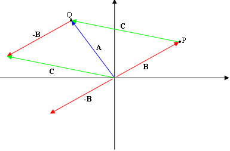
We can in other words simply
compute the difference of the points’ coordinates in order to get the
components of the vector between these points. Therefore, you can say that the
vector between the points P and Q will have the components (Px - Qx, Py - Qy).
The distance
formula
Now
that we know how to compute the vector from one point to another, we can see
that the distance between those points is equal to the length of that vector.
So the distance between two points, P and Q, will be: 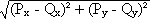
The Dot
Product
Before we learn about the
dot product, we have to define what the angle between two vectors is. Since two
vectors may not start at the same position, you might think that there is no
angle between them. But remember that the position of a vector doesn’t mean
anything, so you could visually move these two vectors together so that they
start at the same points and that still wouldn’t affect the vectors themselves
at all. Then, we can choose between two angles: on that is less than 180
degrees and one that is greater. From now on, we decide that we always mean the
one that is less or equal to 180 degrees.
Since vector multiplication
doesn’t really mean anything, we don’t have to bother with that. Instead, we
use something called the dot product,
and it works like this if you have two vectors, U and V, with the angle q in between them:
U • V = |U| * |V| * cos q.
Now, we can see that the dot
product of two vectors is the product of these two vectors’ length and the
cosine value of the angle in between them.
But you can also calculate
the dot product by using the components of the two vectors. If we have U = (Ux, Uy) and V = (Vx,
Vy), we get U • V
= Ux * Vx
+ Uy * Vy. No
matter what method you use, the product is always the same, and it is always a
scalar value.
The angle
between two vectors
In
order to calculate the angle between two vectors we must use the dot product of
these vectors. We know that Ux * Vx + Uy *
Vy is equal to |U| *
|V| * cos q, so we can use that in order to find out what (cos q) is.
cos q = (Ux * Vx
+ Uy * Vy) / (|U| * |V|)
And finally, we can find the
angle q by using arccosine.
q = arccos((Ux *
Vx + Uy *
Vy) / (|U| * |V|))
And that’s it!
The Cross-product
In order to use the cross
product, we will have to use three-dimensional vectors because otherwise it
won’t make any sense. Without further ado, here’s what it is:
U x V = (Uy * Vz - Uz * Vy, Uz * Vx - Ux *
Vz, Ux * Vy - Uy * Vx)
This results in a vector
that is completely perpendicular to both U
and V. In other words, this is what
we use in order to calculate the normal of a polygon. When we do that, we
simply create two vectors from the tree vertices of the polygon and then we get
the normal from the cross-product of those vectors.
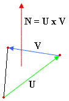
Now that’s enough about
vectors, let’s move on to matrices.
An introduction to matrices
Matrices are actually
nothing but two-dimensional arrays, really. What makes them special is they way
you use them in order to perform calculations. A typical 4x4 matrix may look
something like this:
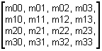
Ok,
that’s cool. But what’s it good for? In order to find that out, we need to know
how to perform a few simple operations on the matrix.
Scalar-matrix multiplication
Multiplying
a matrix with a scalar is a snap! Everything we need to do is multiply every
member of the matrix by the value. Like this:
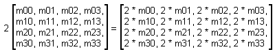
Matrix multiplication
Although
multiplying a matrix with a scalar is pretty simple, multiplying two matrices
together can be a little more complex. What you do, is that you take a row from
the first matrix A and multiply it by the corresponding column of the second
matrix B. Then you add together each element that is multiplied and put that
into the resulting matrix. This may sound a bit confusing to you, but take a
look at this figure that illustrates the whole process:
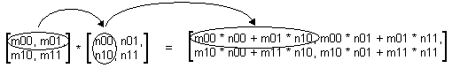
Ok, but
what if the two matrices don’t have the same dimensions? What if you try to
multiply a 2*3 matrix by a 3*3 matrix? If you did this, you will see that you
get a resulting 2*3 matrix.
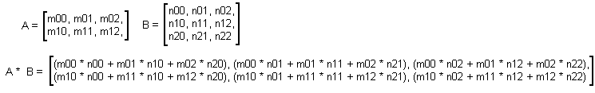
Wow!
That’s some math, eh? But if you look long enough you’ll see that it works
accordingly to the matrix multiplication pattern, so there is some logic behind
it after all :-)
You can
see that the two matrices you are multiplying must have the same inner dimensions. That is, you can multiply
a 3*2 matrix by a 2*4 matrix, but you cannot multiply a 3*2 matrix by a 3*4
matrix. Get it? If not, please send me an e-mail and I’ll explain further :-)
Now the
question is: how do we use all this in computer graphics? Although there are a
million of situations where you can use matrices, the most common use is
probably for transformations.
If you
think about it, you could use a 4*1 matrix in order to describe a position.
Like this:
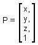
And you
could then multiply this matrix by a so-called transformation matrix. A typical transformation matrix for
translation may look something like this:
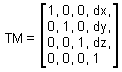
So in
order to translate the point P, we simply multiply it by the translation matrix
we just created. And then we get:
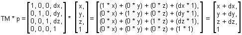
And that
is exactly what we want! You can do pretty much the same thing when rotating
and scaling too, but I won’t cover that here.
Well, now
you have a basic understanding of how to use matrices. The cool thing about
matrices is that you can put multiple transformations into one single matrix.
For example, if you have three transformation matrices: one that translates the
objects ten units down the z axis, one that rotates the object 50 degrees and
one that scales the object to twice its original size, you could simply
multiply all of these matrices together and then apply all of these
transformations by performing one single matrix multiply. Now if that’s not
cool, then tell me what is! :-)
Anyhow,
that’s enough of the math for now. So you’re on your own from here. And hey!
That’s the end of this tutorial as well. I hope it has been somewhat
informative, and I’d love to hear from you. So please send any comments,
corrections, ideas or whatever to me (you can find my e-mail address at the
bottom of this document).
I wish
you luck with Jamagic. And happy coding!
- Erik
Alsterberg